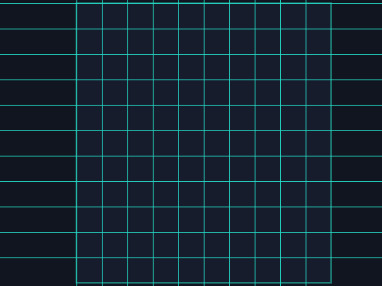

俄罗斯方块
五次课做出一个完整的街机游戏——先玩成品 → 拆解 → 自己试 → 卡住才看参考做法。上课请用 放映版；本页是全文与进度。
一、开课之前
先玩 1 分钟
👨👩👦 一起 · 先玩 1 分钟
先把成品玩一遍——你接下来五次课，就是要亲手做出它。
游戏解剖图
👨👩👦 一起 · 游戏解剖图（自上而下）
整个游戏 = 五大模块，五次课各做一块：
第 1 课
第 2 课
第 3 课
第 4 课
第 5 课
素材清单
👨👩👦 一起 · 素材
一个角色就够：单格方块——七种颜色七个造型，一个克隆体就是一格。

背景素材包自带课程进度表
👨👩👦 一起 · 课程进度表
二、五次课
第 1 次 · 棋盘开机
👨👩👦 一起 · 本章目标
👨👩👦 一起 · 效果与拆解
- 新学地图列表— 180 项，0=空 1=有
- 已有格子公式— 编号→行列→像素
- 新学点亮测试— 改一项+克隆显示
- 已有克隆— 一个分身=一格
👦 孩子自己 · 自己试试（先别翻答案）
先自己试 10 分钟：素材包里全有，先导入摆好；想怎么做就怎么做，改坏了绿旗能复原；卡住超过 5 分钟，再看下面的参考做法。
👨👩👦 一起 · 概念 · 棋盘即列表
地图 = 棋盘的记性
- 10 列 × 18 行 = 180 项，开局全是 0
- 编号 n → 列 = 余数+1、行 = 取整+1（老朋友了）
- 像素：x = 列×20 − 190，y = 170 − 行×20
👨👩👦 一起 · 参考做法（卡住才看）
- 建棋盘
当按下 [r] 键 删除 [地图] 的全部项目 重复执行 (180) 次 将 (0) 加入 [地图]一次性工具（跑完可留可删）；再建全局变量 编号 / 列号 / 行号✅ 监视窗：180 项，全是 0 - 格子换算三连（复习）
将 [编号] 设为 (100) 将 [列号] 设为 (((编号 - 1) 除以 (10) 的余数) + (1)) 将 [行号] 设为 (([向下取整] ((编号 - 1) / (10))) + (1)) 移到 x: (((列号 - 1) * (20)) - (190)) y: ((170) - ((行号 - 1) * (20)))
先手算：编号 100 → 第 10 行第 10 列 → 像素 (0, −10)，对上再往下✅ 单格方块本体精准站在第 100 格 - 点亮一格 = 改列表 + 克隆显示
将 [地图] 的第 (100) 项替换为 (1) 克隆 [自己]
克隆体启动「显示」——记住这个套路：数据变了，画面跟着变✅ 第 100 格亮起一格蓝——这就是整个俄罗斯方块的原子操作
👨👩👦 一起 · 验收
- 🗄️ 180 项棋盘建好
- 📐 任意编号都能换算到正确像素
- 💡 点亮 = 改列表 + 克隆显示
棋盘有了记忆——下一课让方块掉下来。
👨👩👦 一起 · 试一试
棋盘实验
🧑 家长先看 · 常见错误
棋盘两病
👦 孩子自己 · 进阶挑战 · 三选一
外观
变量
外观
👦 孩子自己 · 课后回顾
第 2 次 · 方块下落
👨👩👦 一起 · 本章目标
👨👩👦 一起 · 效果与拆解
- 新学形状=偏移表— 形偏横/形偏竖 各 4 项
- 新学锚点— 一个格带三个兄弟
- 新学分组下落— 锚点动，全组动
- 已有格子公式— 偏移+锚点=位置
👦 孩子自己 · 自己试试（先别翻答案）
先自己试 10 分钟：素材包里全有，先导入摆好；想怎么做就怎么做，改坏了绿旗能复原；卡住超过 5 分钟，再看下面的参考做法。
👨👩👦 一起 · 概念 · 形状即偏移
形状 = 4 个相对位置
- 形偏横 存横偏移、形偏竖 存竖偏移，各 4 项
- 锚点是形状的"领头格"：位置 = 锚点 + 偏移
- 七种方块就是七组偏移——先做一种，跑通再换
🟦
🟦
🟦
👨👩👦 一起 · 参考做法（卡住才看）
- 手动填一个竖条
全局列表 形偏横 / 形偏竖 各填 4 项：形偏横 = 0,0,0,0；形偏竖 = 0,1,2,3（监视窗 ➕ 手填）——这就是"竖条"的配方✅ 两条 4 项的偏移表就绪
- 锚点 + 4 个分身
当按下 [空格] 键 将 [锚列] 设为 (5) 将 [锚行] 设为 (1) 将 [格号] 设为 (0) 重复执行 (4) 次 将 [格号] 增加 (1) 克隆 [自己]写在单格方块本体上；格号"仅适用于当前角色"，分身各带各的✅ 按空格，天上出现 4 格蓝条 - 分身各自算位置
当作为克隆体启动时 将 [列号] 设为 ((锚列) + ([形偏横] 的第 (格号) 项)) 将 [行号] 设为 ((锚行) + ([形偏竖] 的第 (格号) 项)) 移到 x: (((列号 - 1) * (20)) - (190)) y: ((170) - ((行号 - 1) * (20))) 换成 [方块-青] 造型 显示 重复执行 等待 (0.5) 秒 将 [行号] 设为 ((行号) - (1)) 移到 x: (((列号 - 1) * (20)) - (190)) y: ((170) - ((行号 - 1) * (20)))每拍行号 −1 重算 y——四格同步下落；偏移是私有变量（格号、列号、行号都选仅当前角色）✅ 蓝条每 0.5 秒落一格，四格整齐
👨👩👦 一起 · 验收
- 🧩 四格一组不掉队
- ⬇️ 匀速一格一格落
- ↩️ 空格能再发一个（本课可重叠）
方块会落了——什么时候"停"？下一课。
👨👩👦 一起 · 试一试
下落实验
🧑 家长先看 · 常见错误
下落三病
👦 孩子自己 · 进阶挑战 · 三选一
运算
声音
侦测
👦 孩子自己 · 课后回顾
第 3 次 · 落地为安
👨👩👦 一起 · 本章目标
👨👩👦 一起 · 效果与拆解
- 新学卡住判断— 下一行出界/有 1
- 新学广播落定— 四格一起停
- 新学写进地图— 编号替换为 1
- 新学再发车— 回顶 + 随机形状
👦 孩子自己 · 自己试试（先别翻答案）
先自己试 10 分钟：素材包里全有，先导入摆好；想怎么做就怎么做，改坏了绿旗能复原；卡住超过 5 分钟，再看下面的参考做法。
👨👩👦 一起 · 参考做法（卡住才看）
- 每格自己查"下面"
将 [下面编号] 设为 ((((行号) - (2)) * (10)) + (列号)) 如果 <<(行号) = (1)> 或 <([地图] 的第 (下面编号) 项) = (1)>> 那么 广播 [落定] 停止 [这个脚本]放进分身的下落循环、每拍移动之前查：行号=1 到底了；或下一行(行号−1)那格在地图里已是 1。查编号公式 = (行−1)×10＋列✅ 方块落到地形上一瞬，四格齐停 - 落定 = 写进地图
当接收到 [落定] 将 [落定编号] 设为 ((((行号) - (1)) * (10)) + (列号)) 将 [地图] 的第 (落定编号) 项替换为 (1)
落定的分身原地站岗不再下移（它已经是地形的一部分）✅ 监视窗里地图一项项变 1——棋盘记住了一切 - 回顶再发车
当接收到 [落定] 等待 (0.3) 秒 将 [锚列] 设为 (在 (4) 和 (7) 之间取随机数) 将 [锚行] 设为 (1) 将 [形状] 设为 (在 (1) 和 (2) 之间取随机数) 广播 [换形状]
本体脚本；"换形状"= 按形状号重填 形偏横/形偏竖（教学版先 1=竖条 2=方块，照第 2 课加料站配方填）；填完再克隆 4 格（第 2 课发车那段）✅ 落一个、再来一个——游戏会自己转了
👨👩👦 一起 · 验收
- 📦 方块落在地形上不再穿
- 🗄️ 地图实时记录每个落定格
- 🔄 自动发车，形状/颜色随机
这是全关的枢纽——数据流彻底转起来了。
👨👩👦 一起 · 试一试
落定实验
🧑 家长先看 · 常见错误
落定三病
👦 孩子自己 · 进阶挑战 · 三选一
变量
声音
变量
👦 孩子自己 · 课后回顾
第 4 次 · 移动与旋转
👨👩👦 一起 · 本章目标
👨👩👦 一起 · 效果与拆解
- 新学平移检查— 旁边格空才能动
- 新学旋转=换配方— 四向偏移表
- 新学加速下落— 等待秒数变小
- 已有先查后动— 落定同款思路
👦 孩子自己 · 自己试试（先别翻答案）
先自己试 10 分钟：素材包里全有，先导入摆好；想怎么做就怎么做，改坏了绿旗能复原；卡住超过 5 分钟，再看下面的参考做法。
👨👩👦 一起 · 参考做法（卡住才看）
- 左右平移（带检查）
当按下 [右箭头] 键 广播 [检查右移]
教学版简化：直接广播 [右移]，让每个活动分身列号 +1；想要严谨碰撞（旁边有 1 不动），照"查下面"的公式查旁边——进阶挑战有配方✅ 按 ←/→，整组方块平移一格 - 旋转 = 换一组偏移
当按下 [上箭头] 键 将 [方向号] 增加 (1) 如果 <(方向号) > (4)> 那么 将 [方向号] 设为 (1) 广播 [重算位置]偏移表升级为 4 组：竖条 0°=(0,0,0,0 / 0,1,2,3)，90°=(0,1,2,3 / 0,0,0,0)……分身按 方向号 读对应一列；重算位置 = 重跑"锚点+偏移"那两行✅ 按 ↑ 方块转身——竖条变横条 - 加速下落
当按下 [下箭头] 键 将 [拍速] 设为 (0.08)
等一下——事件帽只能触发一次。正确做法：主循环里改用变量：等待 (拍速)，而 ↓ 事件把拍速设 0.08、松开由"重复执行直到不成立"等松手后恢复 0.5✅ 按住 ↓ 直坠地面
👨👩👦 一起 · 验收
- ↔️ 左右平移不掉格
- ↺️ 旋转四向循环
- ⬇️ 按住加速、松开恢复
可玩性成立——就差最后一环：消行。
👨👩👦 一起 · 试一试
手感实验
🧑 家长先看 · 常见错误
操控三病
👦 孩子自己 · 进阶挑战 · 三选一
变量
控制
事件
👦 孩子自己 · 课后回顾
第 5 次 · 消行与收官
👨👩👦 一起 · 本章目标
👨👩👦 一起 · 效果与拆解
- 新学满行检测— 数 10 个 1
- 新学行搬移— 上方整体下移
- 新学画面下移— 分身跟着跳行
- 已有计分加速— 难度公式收官
👦 孩子自己 · 自己试试（先别翻答案）
先自己试 10 分钟：素材包里全有，先导入摆好；想怎么做就怎么做，改坏了绿旗能复原；卡住超过 5 分钟，再看下面的参考做法。
👨👩👦 一起 · 概念 · 行搬移
消除 = 上方整体搬家
- 检测：该行 10 个编号的地图值全 = 1
- 搬移：从消除行往上，每行抄它上一行
- 顶行搬空后设 0——一行就消干净了
行3 落到行4…
👨👩👦 一起 · 参考做法（卡住才看）
- 落定后体检：找满行
当接收到 [落定] 将 [行数] 设为 (18) 重复执行 (18) 次 将 [列数] 设为 (1) 重复执行 (10) 次 将 [查编号] 设为 ((行数 - 1) * (10)) 将 [查编号] 设为 ((查编号) + (列数)) 如果 <([地图] 的第 (查编号) 项) = (0)> 那么 将 [列数] 设为 (99) 将 [列数] 增加 (1) 如果 <(列数) = (11)> 那么 广播 [消行]写在本体上（本体管全局体检）；列数=99 是"发现空格，提前判死刑"的小技巧，广播消行时把 行数 一起报出去（简化：用全局变量 消除行）✅ 哪行拼满，哪行触发消行 - 数据搬家：整行下移
当接收到 [消行] 将 [搬行] 设为 (消除行) 重复执行 ((消除行) - (1)) 次 将 [列数] 设为 (1) 重复执行 (10) 次 将 [搬编号] 设为 ((搬行 - 1) * (10)) 将 [搬编号] 设为 ((搬编号) + (列数)) 将 [抄编号] 设为 ((搬行 - 2) * (10)) 将 [抄编号] 设为 ((抄编号) + (列数)) 将 [地图] 的第 (搬编号) 项替换为 ([地图] 的第 (抄编号) 项) 将 [列数] 增加 (1) 将 [搬行] 增加 (-1) 重复执行 (10) 次 将 [地图] 的第 (列数) 项替换为 (0) 将 [列数] 增加 (1)从消除行往上，每行抄上一行的值；最后把第 1 行清 0——棋盘数据完成"抽层"✅ 监视窗：满行上方的 1 整体下移一层 - 画面跟着跳行 + 计分
当接收到 [消行] 播放声音 [zap] 将 [分数] 增加 (10) 将 [拍速] 增加 (-0.01) 广播 [全体下移]
"全体下移"= 每个地形分身把自己的行号 +1、重算 y（分身脚本里再挂一个接收）；到顶（堆出屏幕）判负：体检发现第 1 行有 1 → 广播游戏结束✅ 满行"唰"地消失、上方落下、分数 +10 - 收官总结：三句话 + 六关回顾
🧱 打砖块🐤 小鸟🚀 太空🐍 贪吃蛇🏰 塔防🟦 俄罗斯方块讲了什么、最难在哪、想怎么改——六门课，一次讲完✅ 六个游戏，全部由你亲手写出
👨👩👦 一起 · 验收
- ✨ 满行消除、上方下落
- 🎒 +10 分、越玩越快
- 💀 堆到顶判负
- 🎯 收官总结讲满三句
六门课全部通关：输入、物理、克隆、列表、广播、公式——你都亲手用过一遍。
👨👩👦 一起 · 试一试
收官调校
🧑 家长先看 · 常见错误
消行两坑
👦 孩子自己 · 进阶挑战 · 三选一
外观
变量
事件
👦 孩子自己 · 课后回顾
三、本作总结
- 第 1 课🗄️ 列表·地图
- 第 1 课➗ 运算·格子
- 第 2 课🧩 变量·形状
- 第 3 课📣 广播
- 第 5 课📦 列表搬移
- 棋盘即列表：180 项记着每格有没有方块
- 形状即偏移：锚点 + 偏移 = 任何形状
- 消行 = 上方整体搬家：数据搬移，画面跟随